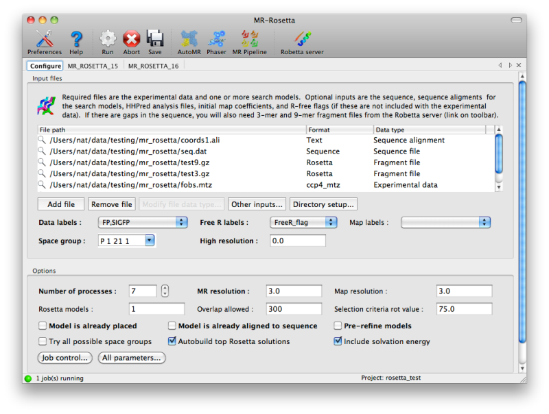
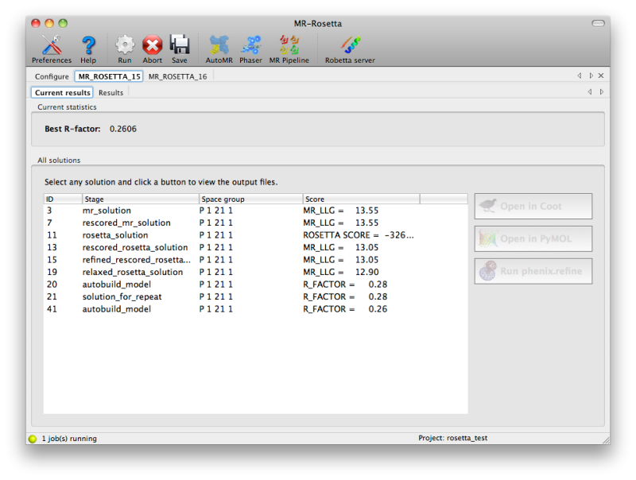
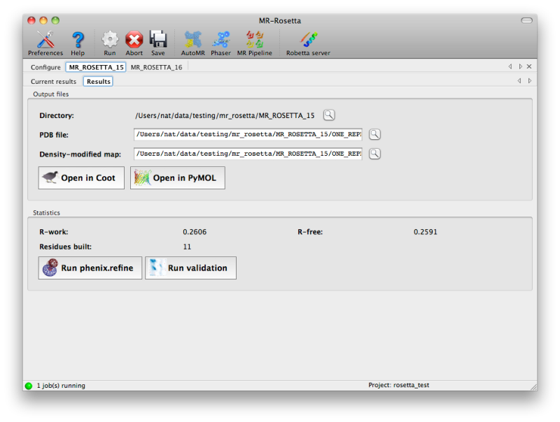

Molecular replacement and autobuilding using Phaser, Rosetta, and autobuild with mr_rosetta
- mr_rosetta: Tom Terwilliger, Frank DiMaio, Randy Read, David Baker
mr_rosetta is a procedure for extending the range of molecular
replacement by combining tools from the structure-modeling field
(Rosetta) with crystallographic molecular replacement, model-building,
density modification and refinement. The approach is described in Dimaio
et al. (2011). It can also be used to rebuild a model with a combination
of Rosetta and Phenix tools.
A key requirement for using mr_rosetta is that you have to have a
sequence alignment of the protein used as a template to model your
target protein. You can try several different alignments, but a good
alignment has to be in your set of alignments or the procedure will be
unlikely to be successful. The reason is that Rosetta homology modeling
makes strong use of the sequence, so if your alignment is incorrect you
are essentially trying to build the wrong molecule.
The basic process is to find MR solutions with Phaser, rebuild them with
Rosetta, then rebuild those models with phenix.autobuild. The
combination of Rosetta rebuilding and phenix rebuilding is the key part
of this method. In slightly more detail, this process is to select
possible MR solutions (one of which must later be shown to be correct
for the procedure to succeed)with Phaser, score with LLG
following Rosetta relaxation, pick the best solutions, rebuild each of
these with Rosetta including map information (density term), score the
resulting models with Rosetta, select the highest and score with LLG,
verify that the top solutions are all about the same (electron density
maps are correlated), and rebuild the top models with autobuild.
During both the Rosetta and phenix.autobuild model-building the starting
model may be modified by insertion and deletion of loops based on the
sequence provided. The extent of loop fitting will normally depend on
the quality of the map that is obtained by mr_rosetta.
mr_rosetta can handle a single copy of a single chain, or multiple
copies of a single chain (NCS), or multiple copies of multiple chains
(groups of NCS). If you supply one or more input search models, then the
entire crystallographic asymmetric unit must contain some multiple of
the search models you supply (phaser will be used to find copies of the
search model). NCS will be found automatically in your search model and
in any models assembled by mr_rosetta.
NOTE: if your molecule has multiple chain types, then you cannot use the
simple hhr file input (see below) and you cannot automatically run
pre-refinement with rosetta on your molecule. Instead you need to use
mr_model_preparation and Phaser to place your model. Then you
can supply the aligned, placed structure to mr_rosetta for rebuilding.
Additionally in this case you will need to supply a different set of
fragments files for each chain type.
- Prior to MR. Edited templates are optionally rebuilt before carrying
out molecular replacement.
- In scoring MR solutions. MR solutions are scored by Phaser LLG scores
calculated after model relaxation with Rosetta including the term for
fit to the current density map.
- In rebuilding MR solutions. Initial molecular replacement solutions
are rebuilt using Rosetta model completion and relaxation including
the term for fit to the current density map
The overall process in one cycle of mr_rosetta is: (a) edit the model
and place it in the unit cell (e.g., MR, molecular replacement), (b)
score all MR solutions and take the best ones by LLG for further steps,
(c) rebuild each model 20-2000 times using Rosetta and density-modified
2Fo-Fc map to yield Rosetta models, (d) refine Rosetta models, average
density from top 20%, continue rebuilding each Rosetta model using
averaged density, and (e) take top models based on LLG score and rebuild
with autobuild. An optional prerefinement step is to carry out Rosetta
modeling in step (a) above, before carrying out molecular replacement.
- Check installation and verify that Rosetta binary and libraries are
available (can specify with keywords rosetta_path (overall path to
rosetta directories), and the keywords (paths relative to overall
rosetta_path) rosetta_binary_dir, rosetta_binary_name,
rosetta_script_dir, rosetta_database_dir)
- Read reflections file (must be CCP4 mtz and have a freeR set; use
phenix GUI or import_and_add_free to set up)
- An optional model editing step. If an hhpred .hhr file is supplied,
read through this file, download the PDB files specified, apply
alignments specified to generate pairs of alignment files and edited
models (e.g., 2cng.ali, 2cng_mr.pdb based on 2cng.pdb). This step is
carried out by sculptor using a default protocol.
NOTE 1: For tailoring of this step, use mr_model_preparation and then
supply the aligned model to mr_rosetta.
NOTE 2: If your structure contains more than one chain or requires more
than one homology model to represent the structure, then you need to use
mr_model_preparation and Phaser to place your model. Then you
can supply the aligned, placed structure to mr_rosetta for rebuilding.
- NOTE: The steps below are carried out for each model/alignment file
pair supplied, (or for each pair generated by mr_rosetta if an
hhpred .hhr file is supplied with alignment information).
- Check model, alignment file and sequence file to verify that they
match (i.e., that the alignment file can be applied to the model to
yield a model with the sequence in the sequence file). Copy overall
B-factor and list of B-factors for atoms from the model to be
substituted into subsequent models before scoring. Rewrite the
sequence file into standard (fasta) format.
- Optional Rosetta modelling prior to molecular replacement
(prerefinement). The edited starting model (template) is rebuilt with
Rosetta using the standard Rosetta energy functions and a fragments
library specific to the target sequence to fill in gaps. (If no gaps
are present, no fragments files are necessary).
- Run Phaser to find molecular replacement solutions (default
number_of_output_models=5).
- Refine (if refine_after_mr=True) each MR solution with refine. Use
resulting 2mFo-DFc map as starting point for density modification,
yielding density-modified current density map for this refined
solution, to be used in Rosetta rebuilding below. Ignore refined
model. Note (but ignore) LLG of refined model.
- Determine the baseline LLG for model improvement. This LLG can either
be the LLG obtained in the previous step, or an LLG obtained after
rebuilding the MR model with Rosetta. Optionally perform rosetta
relaxation (rebuilding rescore_mr.nstruct models, typically 5)
models without filling in missing sections, including a density term
from the map in the prevous step. The sequence of all parts of the
model at this point will match the target sequence. Score each
solution by LLG. These models are not carried forward, but taking the
best LLG for any rebuilt model as the score for the original model
from MR. This score will be used later to prioritize MR solutions for
further analysis.
- Sample relaxation script used to run relaxation in Rosetta:
#!/bin/sh
cd MR_ROSETTA_1/RESCORE_MR_1/RELAX_AND_SCORE_IN_SETS_1/RUN_1/WORK_1
/net/terwill/rosetta/rosetta_source/bin/mr_protocols.default.linuxgccrelease \
-database /net/terwill/rosetta/rosetta_database \
-MR:mode cm \
-in:file:extended_pose 1 \
-in:file:fasta MR_ROSETTA_1/WORK_1/EDITED_1crb_fasta.txt \
-in:file:alignment MR_ROSETTA_1/WORK_1/EDITED_1crb_2qo4.ali \
-in:file:template_pdb MR_ROSETTA_1/AutoMR_run_1_/2QO4.1.pdb \
-relax:default_repeats 4 \
-relax:jump_move true \
-edensity:mapreso 3.00 \
-edensity:grid_spacing 1.5 \
-edensity:mapfile \
MR_ROSETTA_1/AutoMR_run_1_/2QO4.1_refine_001_map_coeffs.map \
-edensity:sliding_window_wt 1.0 \
-edensity:sliding_window 5 \
-cm:aln_format grishin \
-MR:max_gaplength_to_model 0 \
-nstruct 1 \
-ignore_unrecognized_res \
-overwrite
- Take the top (max_solutions_to_rebuild=5) models from step 5 and
rebuild them with Rosetta, this time filling in missing sections and
including the density term with the current map (the same map as used
above in relaxation) as part of the target function, generating total
of (rosetta_rebuild.nstruct=20) rebuilt models. These are Rosetta
models. The sequence of these models will be the same as that of the
target (unless there are long gaps in the template that cannot be
filled by Rosetta). Note: in many cases 20 models is sufficient...in
others far more models will make the method work better (i.e., 1000
or 2000 models). This can take a lot of time unless you have a
cluster to run on. This Rosetta rebuilding step uses a library of
fragments specific to the target sequence to fill in any gaps. (If no
gaps are present, no fragments files are necessary). Sample rebuild
script used:
#!/bin/sh
cd MR_ROSETTA_1/WORK_1/REBUILD_IN_SETS_1/RUN_1/WORK_1
/net/terwill/rosetta/rosetta_source/bin/mr_protocols.default.linuxgccrelease \
-database /net/terwill/rosetta/rosetta_database \
-MR:mode cm \
-in:file:extended_pose 1 \
-in:file:fasta MR_ROSETTA_1/WORK_1/EDITED_1crb_fasta.txt \
-in:file:alignment MR_ROSETTA_1/WORK_1/EDITED_1crb_2qo4.ali \
-in:file:template_pdb MR_ROSETTA_1/AutoMR_run_1_/2QO4.1.pdb \
-loops:frag_sizes 9 3 \
-loops:frag_files inputs/aa1crb_09_05.200_v1_3.gz \
inputs/aa1crb_03_05.200_v1_3.gz none \
-loops:random_order \
-loops:random_grow_loops_by 5 \
-loops:extended \
-loops:remodel quick_ccd \
-loops:relax relax \
-relax:default_repeats 4 \
-relax:jump_move true \
-edensity:mapreso 3.00 \
-edensity:grid_spacing 1.5 \
-edensity:mapfile MR_ROSETTA_1/AutoMR_run_1_/2QO4.1_refine_001_map_coeffs.map \
-edensity:sliding_window_wt 1.0 \
-edensity:sliding_window 5 \
-cm:aln_format grishin \
-MR:max_gaplength_to_model 8 \
-nstruct 1 \
-ignore_unrecognized_res \
-overwrite
- Choose top (percentage_to_rescore=10) rebuilt models based on
Rosetta score (including density term) and rescore them based on LLG
- Determine whether the top (number_of_required_cc=5) best LLG score
Rosetta models are all similar (map correlation between map for top
model with each )
- Refine with phenix.refine the top Rosetta models based on LLG (if
refine_top_models.run_refine_top_models=True,
percent_to_refine=20). Save new 2mFo-DFc map, density modify the
map, and then average the top density-modified maps (top based on
Rosetta score) to yield an averaged density map used in the next
relaxation step. Ignore the refined model.
- Relax (rebuild) the Rosetta models from into their corresponding
density maps from with Rosetta, generating
(relax_top_models.nstruct=5) models for each. Score each relaxed
model with LLG, take best LLG as score. Save best relaxed model as
new solution. Sample relax script used:
#!/bin/sh
cd MR_ROSETTA_1/GROUP_OF_RESCORE_MR_ROSETTA_2/RUN_1/RESCORE_MR_1/RELAX_AND_SCORE_IN_SETS_1/RUN_1/WORK_1
/net/terwill/rosetta/rosetta_source/bin/mr_protocols.default.linuxgccrelease \
-database /net/terwill/rosetta/rosetta_database \
-MR:mode relax \
-in::file::s \
MR_ROSETTA_1/WORK_1/REBUILD_IN_SETS_1/RUN_8/WORK_1/S_2QO4B_0001_edited.pdb \
-relax:default_repeats 4 \
-relax:jump_move true \
-edensity:mapreso 3.00 \
-edensity:grid_spacing 1.5 \
-edensity:mapfile \
MR_ROSETTA_1/WORK_1/REBUILD_IN_SETS_1/RUN_8/WORK_1/S_2QO4B_0001_edited_refine_001_map_coeffs.map \
-edensity:sliding_window_wt 1.0 \
-edensity:sliding_window 5 \
-nstruct 1 \
-overwrite
- Take the top (number_to_autobuild=5) relaxed refined rebuilt
Rosetta models from the previous step (scored by LLG) and rebuild
them with phenix.autobuild. Report the R/freeR of each model.
At each stage, existing solutions are saved as a python "pkl" file and
can be read back in to mr_rosetta with
"mr_rosetta_solutions=xxx.pkl". These solutions can be displayed with
"display_solutions=True". Existing solutions are stored as
"mr_rosetta_solution" objects which keep track of the model and its
history, the map_coefficients and labels, etc. These can be read in to
mr_rosetta with the keyword "mr_rosetta_solutions=results.pkl" and
used as inputs for subsequent runs, starting at any step that can use
those solutions.
NOTE: You can re-start mr_rosetta only at the beginning of major stages
(like "place_model", "rosetta_rebuild" etc)...but not in between.
Normally at the end of a major stage a .pkl file is written out with
text like "type this to see all the results". You can almost always give
your original command, the command "start_point=xxx" and
"mr_rosetta_solutions=my_pickle_file.pkl" and it should then
continue on from there.
Jobs can be run on a single machine or on a cluster. A run command for
single jobs (single_run_command="sh") and a run command for batch jobs
(group_run_command=qsub) can be specified as well as the number of
processors to use (nproc=200).
The qsub command is used in Sun Grid Engine clusters. You can also use
mr_rosetta on a Condor cluster, using
group_run_command="condor_submit ".
All files are stored on a single file system that must be accessible to
all jobs.
Read/write to files are (generally) accompanied by a wait for appearance
of the new file of up to max_wait_time=100 sec.
mr_rosetta runs all cpu-intensive jobs as sub-processes. When it
submits a sub process to do the work it lists the name of the
corresponding log file. You can work your way down to the bottom level
at any time by reading through these log files, copying the name of the
next log file, and opening it until you get to the place where the
actual work is done.
Sub-processes are always run in sub-directories. Each sub-process has a
file "RUN_FILE_1" that contains the information to run the
sub-process, a parameter file PARAMS_1.eff and a log file
"RUN_FILE_1.log" with the log file of running that sub-process. Note
that you can use the parameters files to re-run any jobs that you want.
You can say something like:
phenix.mr_rosetta PARAMS_1.eff
and that will rerun the job specified in that directory.
If some sub-processes fail, normally the failures will be ignored. This
is useful as your overall job can often continue even if a few
refinement or rosetta jobs fail. However if the failure is from the
queueing system (rather than in the actual running of the jobs) then the
overall job may still fail.
If you create a file "STOPWIZARD" in the top level directory (i.e.,
MR_ROSETTA_1/), then each job in the entire process will stop as soon
as any Phenix part of the process takes over (i.e., as soon as Rosetta
jobs finish).
There are two ways to avoid the problem of having one or more
long-running (and very likely eventually unsuccessful) place_model
sub-processes that prevent mr_rosetta from going on. One way is to set
the parameter sufficient_number_finished=nn, where you are satisfied
if any nn place_model jobs finish successfully. Then once nn jobs
finish, all the rest are simply ignored and mr_rosetta goes on. The
jobs that are ignored will continue on until they finish (and will still
be ignored.)
A second way is to edit the value of sufficient_number_finished after
mr_rosetta has started. This is convenient if you see that all the jobs
except for one or two are done, and these seem to be going on forever.
You can create a little file "GO_ON" in the directory where
place_model is being run that contains the value you want for
sufficient_number_finished (if you want it to stop right away and at
least one job is finished, just put in 1). This directory is the
directory where the log files for place_model are located. For example
your overall log file might say,
Splitting work into 2 jobs and running with 2 processors using sh
background=True in /Users/terwill/unix/misc/junk/test_place_model/MR_ROSETTA_7/GROUP_OF_PLACE_MODEL_1
in which case that directory is where you would put GO_ON, where the
file GO_ON just contains a number (the value for
sufficient_number_finished). As in the use of
sufficient_number_finished, the ignored jobs do not actually stop, so
if you really want to stop them you will need to do that in another way
(mr_rosetta does not capture the job numbers for sub-processes so it
can't stop them, it can only monitor what they have done.)
NOTE: you can use this second method with the GO_ON file to tell
mr_rosetta how many finished jobs to require for any set of
sub-processes. Just put this file in the directory specified for that
group of sub-processes. This also works for other phenix tools including
autobuild, ligandfit and find_all_ligands that have the 'Splitting
work into...' text in their log files.
To run phenix.mr_rosetta, you must have installed Rosetta, software developed from the Baker laboratory at the University of Washington.
See the central installation notes for Rosetta
NOTE: For versions 3.6 and later of Rosetta, fragments files are
optional.
To run mr_rosetta on your structure, you will need to use the Robetta
fragment server at the Univ. of Washington to generate 9-mer and 3-mer
fragments from the PDB that are compatible with your sequence file. This
takes a few hours but is very easy to do.
To obtain the two optional fragments files:
- go to: http://robetta.bakerlab.org/fragmentsubmit.jsp
- register
- paste your sequence file into the form
- Receive an email from the server after a few hours that our files are
ready
- Download the files (two files, with similar filenames, one containing
a 9 and and one a 3 like: aat000_09_05.200_v1_3.gz and
aat000_03_05.200_v1_3.gz)
- These are your fragment files. They are optional in your
mr_rosetta parameters file
- NOTE1: if your chain has more than 650 residues, then you will need
to split it up into pieces of 650 residues or fewer before submitting
the sequence to the Robetta server. Then you will get several 3-mer
and 9-mer fragments files, one for each piece that you submit. You
can then simply paste these together after editing all but the first
to fix the residue numbers.
- NOTE2: if you have multiple chain types in your structure then you
will want to have a separate set of fragments files for each chain
type. You can specify these with: fragment_files_chain_list,
fragment_files_3_mer_by_chain, and
fragment_files_9_mer_by_chain instead of fragment_files. Use
fragment_files_chain_list to define which chain ID each of your
fragment_files_3_mer_by_chain and
fragment_files_9_mer_by_chain go with. In this case you must make
sure that there are no chains in your model other than the ones that
you specify with fragment_files_chain_list (no waters, no ligands etc).
- NOTE3: You only need one set of fragments files for each UNIQUE
chain. So if chains A and C are the same, you just need to specify
fragments for chain A. If you have two different chains A and B and
fragment files frag_A_3 frag_A_9 frag_B_3 frag_B_9 then you
should use: fragment_files_chain_list=A
fragment_files_chain_list=B
fragment_files_3_mer_by_chain=frag_A_3
fragment_files_9_mer_by_chain=frag_A_9
fragment_files_3_mer_by_chain=frag_B_3
fragment_files_9_mer_by_chain=frag_B_9
You will need to tell mr_rosetta what to use as search models and the
alignment between the search models and your target structure. The
easiest way is to use the hhpred server (Söding J. (2005) Protein
homology detection by HMM-HMM comparison. Bioinformatics 21, 951-960.)
Here is what to do:
- go to: http://toolkit.tuebingen.mpg.de/hhpred and paste in your
sequence and hit submit job (using all defaults).
- NOTE: choose only the PDB as your database. If you use other databases
the hhr file you get may not work in mr_rosetta.
- In a few minutes there will be a new page with alignments in color.
You want to click on the little Save button on the line above all the
alignments. Save that .hhr file; this contains a list of all the PDB
entries with similar sequences and the alignments.
- Optionally repeat the run of hhpred (hit "Rerun job"), this time selecting
Alignment mode as global in the middle of the page. Save the
resulting .hhr file as well. This creates an alternative, but also
plausible, alignment file.
- The HHR analysis file from hhpred contains PDB entries similar in
sequence to your target and sequence alignments. It is used to create
a list of search models and alignment files. If you supply this file
you do not need to specify alignment files or search models.
If you supply an hhr analysis file from hhpred, you do not need to worry
(usually) about the details of your search models and alignment files.
However you can supply mr_rosetta with your own list of search models
and a corresponding list of alignment files. This section describes what
the alignment files need to look like (two ways you can format these
files.)
Here are your options for supplying alignment information:
- If you have a pre-edited PDB file (i.e., you ran something beforehand
to make the sequence be just what you want), then you just supply the
PDB file and the sequence file (which may be identical or the PDB
file may have deletions relative to the sequence file) as in the
sample scripts.
- Otherwise if you have a .ali alignment file (see below) , you can
supply that along with the PDB file and the sequence file, and then
phenix will use sculptor to apply the alignment .
- Otherwise, and commonly, you supply a .hhr file, and mr_rosetta
downloads the pdb and applys the alignment in the hhr file (and you
don't have to supply either sequence or hhr file).
- If you want to apply an alignment yourself with an hhr file, you can
use mr_model_preparation
- If you want to apply an alignment yourself with an alignment file
that just contains 4 lines (1) > (greater-than-symbol), then title
for target sequence (2) target sequence with - for gaps (3) >the
sequence of the target and (4) the sequence of the protein in the
template PDB you are supplying, then you can use
mr_model_preparation
You can generate an alignment file with phenix.muscle if you do not have
one from another source. Use a command like this:
phenix.muscle -in my_two_sequences.dat -out my_alignment.ali
where my_two_sequences.dat looks like:
> title text for sequence of target (your structure) to follow
LVLKWVMSTKYVEAGELKEGSYVVIDGEPCRVVEIEKSKTGKHGSAKARIVAVGVFDGGKRTLSLPVDAQVEVPIIEKFT
AQILSVSGDVIQLMDMRDYKTIEVPMKYVEEEAKGRLAPGAEVEVWQILDRYKIIRVKG
> title text for sequence of template (supplied PDB) to follow
qlmdmrd AQILSVSGDVIQLMDMRDYKTIEVPMKYVEEEAKGRLAPGAEVEVWQILDRYKIIRVKG qlmdmrd
and my_alignment.ali (your .ali file) looks like:
> title text for sequence of target (your structure) to follow
LVLKWVMSTKYVEAGELKEGSYVVIDGEPCRVVEIEKSKTGKHGSAKARIVAVGVFDGGK
RTLSLPVDAQVEVPIIEKFTAQILSVSGDVIQLMDMRDYKTIEVPMKYVEEEAKGRLAPG
AEVEVWQILDRYKIIRVKG-------
> title text for sequence of template (supplied PDB) to follow
------------------------------------------------------------
-------------QLMDMRDAQILSVSGDVIQLMDMRDYKTIEVPMKYVEEEAKGRLAPG
AEVEVWQILDRYKIIRVKGQLMDMRD
You have two options for alignment files if you are going to use one.
- You can use an alignment file that sculptor can recognize. This file
looks like this (there must be exactly the same number of characters
for the target and the template sequences (including dashes for
gaps):
> title text for sequence of target (your structure) to follow
VDFNGYWKMLSNENFEEYLRALDVNVALRKIANLLKPDKEIVQDGDHMIIRTLSTFRNYIMDFQVGKEFEEDLTGIDD
> title text for sequence of template (supplied PDB) to follow
-AFSGTWQVYAQENYEEFLRAISLPEEVIKLAKDVKPVTEIQQNGSDFTITSKTPGKTVTNSFTIGKEAEIT--TMDG
- Alternatively, you can use a second format for the alignment file for
mr_rosetta (This file is different than the alignment file for
sculptor or mr_model_preparation; it is a MODELLER-style .ali
file). Here is a sample:
## 1CRB_ 2qo4_A
# hhsearch
scores_from_program: 0 1.00
1 VDFNGYWKMLSNENFEEYLRALDVNVALRKIANLLKPDKEIVQDGDHMIIRTLSTFRNYIMDFQVGKEFEEDLTGIDD
0 -AFSGTWQVYAQENYEEFLRAISLPEEVIKLAKDVKPVTEIQQNGSDFTITSKTPGKTVTNSFTIGKEAEIT--TMDG
--
Here is what has to be on each line:
- Line 1: two ## signs, then target PDB ID then template PDB ID. NOTE:
the template PDB ID must match the starting characters of your input
search model file names (the file names themselves, not including the
path to them)
- Line 2 just has a # sign and the word hhsearch
- Line 3 just has some text like scores_from_program: 0 1.00
- Line 4 has a number, then the entire sequence of the structure to be
solved (the target), all on one line. The number is how many residues
at the N-terminus of this sequence are to be ignored in generating a
model. Usually this is 0, but if you supply a sequence that is not
what is in your crystal, it could have some other number. If you are
supplying a template PDB file that has residues to be removed,
indicate these positions with a dash (-) in your sequence. Note: the
sequence on this line cannot start with a dash.
- Line 5 has a number, then the matching sequence of the template PDB,
using dashes (-) to indicate residues that are not present in the
template PDB There must be exactly the same number of characters in
the sequence of your target and the sequence of your template. The
number is how many residues at the N-terminus of your template PDB
are to be ignored. If you have fully edited your template PDB to
match the target sequence, the number will be 0.
- line 6 has two dashes: --
- NOTE: if your model has more than one chain, then you can create two
of the second kind of alignment file (the ones starting with ##) and
just paste them one after the other into an alignment file containing
both.
The output files from mr_rosetta are the same as those from .autobuild:
a model and map coefficients. These will be in a subdirectory listed at
the end of your log file. The files will be something like:
MR_ROSETTA_1/..../AutoBuild_run_1_/overall_best.pdb and
MR_ROSETTA_1/..../AutoBuild_run_1_/overall_best_denmod_map_coeffs.mtz.
A GUI for MR-Rosetta is now available in the "Molecular replacement"
category. Its function is essentially identical to that of the
command-line version, but many of the details are not shown by default.
In addition to the methods described above for configuring your system
to use Rosetta from PHENIX, the GUI also includes a preferences setting
in the "Wizards" section for defining the path to the Rosetta
installation. If the GUI does not detect that you have the environment
set up correctly, it will issue a warning when started.
The configuration tab in the GUI includes a list into which any
combination of input files may be added; the file types should be
recognized (and any relevant data they contain extracted, such as space
group and MTZ label information) automatically. For more complex inputs
involving fragment files, click the button labeled "Other inputs" below
the list of files.

The number of processors to use will be set to one fewer than the total
the number of CPU cores PHENIX thinks are available, but if you are
using a queueing system this number can be increased. You can change how
MR-Rosetta runs child processes by clicking the "Job control" button in
the lower left-hand corner of the configuration tab.
Because it usually takes hours to run, MR-Rosetta will always be
launched by the GUI as a "detached" job, meaning that you can close the
GUI without killing the process, and resume it later. While MR-Rosetta
is running, the current set of solutions will be continuously updated in
a tab labeled "Current results", with the relevant score (LLG from
Phaser, Rosetta score, or R-factor). You may view any of these solutions
by clicking the buttons next to them.

Once the job is complete, a simply summary tab will be displayed,
listing the output files and basic statistics such as R-factors. If the
program was successful, the R-free will usually be below 50%, although
this may vary depending on resolution and data quality. Buttons are
provided to start additional programs or view the model and maps.

When you run mr_rosetta you can specify a command or commands to be
added to the Rosetta scripts. For example, if your model has disulfide
bonds between residues 12 and 15 and between 22 and 39 you can say:
rosetta_command="-MR::disulf 12:15 22:39"
In this command, each disulfide is colon-separated, and the numbering
corresponds to the input fasta file. If you have multiple commands you
can just give multiple rosetta_command statements. Note that any
commands will be applied to all rosetta scripts in this mr_rosetta run.
That means that you can't have different commands for different steps
that use Rosetta. It also means that you cannot specify chain names or
use different commands for different chains. At the moment this feature
is most useful if you are supplying a single chain (or multiple chains
with identical sequences).
When you run mr_rosetta it will write out a mr_rosetta_params.eff
parameter file that can be used to re-run mr_rosetta (just as for
essentially all PHENIX methods).
Before you run mr_rosetta, you can optionally get fragment files from the
Robetta server (see Setting up for a run of mr_rosetta, part A, above).
Then you need an hhr alignment information file from the hhpred server
(see Setting up for a run of mr_rosetta, part B, above), or else a
search model and an alignment file to go with it.
Once you have these files, running mr_rosetta is easy. If you have a
search model (coords1.pdb) and an alignment file for it (coords1.ali),
and a data file fobs.mtz with
FP SIGFP and FreeR_flag, you can type:
phenix.mr_rosetta \
seq_file=seq.dat \
data=coords1.mtz \
alignment_files=coords1.ali \
search_models=coords1.pdb \
already_placed=False\
rescore_mr.relax=False \
rosetta_models=20 \
ncs_copies=2 \
space_group=p212121 \
use_all_plausible_sg=False \
nproc=200 \
group_run_command=qsub
and mr_rosetta will run automatically, generating 20 rosetta models
during structure determination.
If you have an hhr alignment information file, you can specify that
instead of search_models and alignment_files, with the command
hhr_files=myhhpred.hhr. Then you can tell mr_rosetta how many of the
PDB files to use with read_hhpred.number_of_models=1 (to use just the
best one, for example).
You can run mr_rosetta as a purely model-building tool as well. This is
convenient if you have found a MR solution but cannot rebuild it
successfully. Here is an example. The keyword to use is
already_placed=True:
phenix.mr_rosetta \
seq_file=seq.dat \
data=coords1.mtz \
search_models=coords1.pdb \
already_placed=True \
rescore_mr.relax=False \
rosetta_models=20 \
ncs_copies=2 \
space_group=p212121 \
use_all_plausible_sg=False \
nproc=200 \
group_run_command=qsub
If your search model is too distant to find a molecular replacement
solution, you can prerefine your model with Rosetta before carrying out
molecular replacement. Here is an example. The keyword to use is:
run_prerefine=True. NOTE 1: It is best to specify the number of
ncs_copies if you use run_prerefine. If you do not, then you may end
up running several parallel jobs, each of which is independently
carrying out prerefinement on the same input model (to be used later
with different numbers of ncs copies). Once you have run your job with
one value of ncs_copies, you can just use the best prerefined model
from that job as a search model in your other runs.
phenix.mr_rosetta \
seq_file=seq.dat \
data=coords1.mtz \
search_models=coords1.pdb \
run_prerefine=True \
number_of_prerefine_models=1000 \
rescore_mr.relax=False \
rosetta_models=20 \
ncs_copies=2 \
space_group=p212121 \
use_all_plausible_sg=False \
nproc=200 \
group_run_command=qsub
NOTE 2: if you have a model and just want to run pre-refinement and not
anything else...then you can do so without any data:
phenix.mr_rosetta \
seq_file=seq.dat \
search_models=coords1.pdb \
run_prerefine=True \
number_of_prerefine_models=1000
Your pre-refined model(s) will be listed in
MR_ROSETTA_1/GROUP_OF_PLACE_MODEL_1/RUN_FILE_1.log
and you can pick the best of these (most negative score, listed first).
If you have run hhpred and obtained a .hhr file with a list of
alignments of proteins in the PDB with your sequence, you can run
starting from your sequence file and this .hhr file. Here is an example.
The keyword to use is: hhr_files=my_hhr_file.hhr.
phenix.mr_rosetta \
seq_file=bfr258e.fasta \
data=bfr258e_data.mtz \
hhr_files=bfr258e.hhr \
read_hhpred.number_of_models=1 \
read_hhpred.number_of_models_to_skip=0 \
rescore_mr.relax=False \
rosetta_models=20 \
ncs_copies=1 \
nproc=200 \
group_run_command=qsub
NOTE: it is generally a good idea to run several separate mr_rosetta
jobs, one for each homology model you want to extract from the PDB, and
possibly also separately for each possible number of NCS copies. You can
do this by adjusting the "read_hhpred.number_of_models_to_skip"
from 0 to N and the value of "ncs_copies" in the script above. In this
way, you can just pick the first job that gives you a good solution. If
you run them all at once, then all jobs will wait for the slowest job to
finish at each step. If there are multiple NCS copies and some search
models are poor, this can sometimes take a very long time.
Usually you will want to edit a parameters file so that you can specify
more details of the run. You can get a default parameters file with:
phenix.mr_rosetta
and then just edit that file.
You can do a test of mr_rosetta to make sure everything is ok with:
phenix_regression.wizards.test_command_line_rosetta_quick
If you get an error message something like ...
/opt/rosetta3.4/rosetta_source/bin/mr_protocols.default.linuxgccrelease:
error while loading shared libraries: libprotocols.7.so: cannot open
shared object file: No such file or directory" this can mean that the
LD_LIBRARY_PATH is not correctly interpreted by mr_rosetta. Try
running this command just before running phenix, or put in your
bash.bashrc file (if using sh/bash) or .cshrc file (if using csh):
PHENIX_TRUST_OTHER_ENV="yes"
If mr_rosetta fails, the first thing (after just checking the commands
you used) is to run the mr_rosetta regression tests to make sure that
the installations of phenix and rosetta are both ok:
phenix_regression.wizards.test_command_line_rosetta_quick
That should take 10-20 minutes to run and say "OK" for all the tests. If
one or more of these say instead "FAILED" ...you can go into the failed
run (for example, test_autobuild/) and run the script there (e.g.,
./test_autobuild.com) which should fail.. and you can track down what
is not working.
NOTE: On some systems there may be some really minor (numerical)
differences between the standard results and those on your system. These
can cause the "FAILED" to be printed out but can safely be ignored. You
can tell by looking at the file "diff.dat" that should be in the failed
run directory and you'll see that the differences are very minor.
If the tests all are OK, then there is something specific to your data
or script. The best way to debug this is to go to the last sub-process
that has failed or hung and look at the log file, and possibly re-run
that step from the terminal. Here is how to get there:
- In your main log file the last lines will be something like...
Starting job 1...Log will be: /net/omega/raid1/scratch1/terwillMR_ROSETTA_2/GROUP_OF_PLACE_MODEL_1/RUN_FILE_1.log
- This log file in turn may say that further jobs were submitted...if
so, go to the end of that log file...find the name of the next log
file...etc... until you are at the very last thing done.
- Your last run is in the directory where RUN_FILE_1.log is located.
There will be the following files (more if there are lots of runs in
this directory of course):
terwill@sigma> cd MR_ROSETTA_2/GROUP_OF_PLACE_MODEL_1/
terwill@sigma> ls -tlr
total 60
-rwx------ 1 terwill lanl 1495 Feb 5 14:54 RUN_FILE_1.sh*
-rwx------ 1 terwill lanl 282 Feb 5 14:54 RUN_FILE_1*
-rw-r--r-- 1 terwill lanl 6431 Feb 5 14:54 PARAMS_1.eff
-rw-r--r-- 1 terwill lanl 6564 Feb 5 14:54 mr_rosetta_params.eff
-rw-r--r-- 1 terwill lanl 130 Feb 5 14:54 INFO_FILE_1
drwxr-xr-x 6 terwill lanl 4096 Feb 5 16:44 RUN_1/
-rw-r--r-- 1 terwill lanl 21575 Feb 5 16:45 RUN_FILE_1.log
-rw-r--r-- 1 terwill lanl 51 Feb 5 16:46 JOBS_RUNNING
Here:
- PARAMS_1.eff are the parameters used in the run
- RUN_FILE_1.sh actually runs the job (e.g., phenix.mr_rosetta
PARAMS_1.eff) NOTE: usually this is mr_rosetta but it could also be
another routine, so you do have to look at it or the first line of
PARAMS_1.eff which will name the routine used.
- RUN_FILE_1.log is the log file for this run. Look at the end of
this file.
- The job is run in RUN_1/
The key here is that you can type
phenix.mr_rosetta PARAMS_1.eff
and the exact same job that failed or ran will be run again. You can
use this to debug what is going on.
- Look at the log file RUN_FILE_1.log and the files in RUN_1/.
Notice what the last file written in RUN_1/ is...this may give a
clue as to when and where the problem occurred. Usually there will be
an error message in RUN_FILE_1.log that may be informative.
- If the run in question is a Rosetta job, then the actual Rosetta job
is run in a subdirectory of RUN_1/ This will be in a directory like:
MR_ROSETTA_2/GROUP_OF_ROSETTA_REBUILD_1/RUN_1/REBUILD_IN_SETS_1/RUN_5/WORK_1
Here this is in RUN_1 of a group of rosetta models, set 1, run 5,
working directory. In this directory you will find something like:
terwill@sigma> cd WORK_1/
terwill@sigma> ls -tlr
total 684
-rw-r--r-- 1 terwill lanl 1475 Feb 5 16:48 rebuild.flags
-rwxr-xr-x 1 terwill lanl 304 Feb 5 16:48 run_rebuild.sh*
-rw-r--r-- 1 terwill lanl 422921 Feb 5 17:26 S_3DZB__0001.pdb
-rw-r--r-- 1 terwill lanl 665 Feb 5 17:26 score.sc
-rw-r--r-- 1 terwill lanl 97437 Feb 5 17:26 rebuild.log
-rw-r--r-- 1 terwill lanl 158717 Feb 5 18:17 S_3DZB__0001_ed.pdb
Here:
- rebuild.flags are the commands to Rosetta
- run_rebuild.sh is a command file to run Rosetta with rebuild.flags
- rebuild.log is the log file
You can look at the log file and see if there are any messages. Then you
can rerun the Rosetta job in a scratch directory with:
mkdir junk
cd junk
../run_rebuild.sh
With luck, you will get the same errors and you can debug from there by
changing the parameters or input files in rebuild.flags to see what was
causing the problems.
mr_rosetta does not have the full flexibility of autobuild, so you may
want to get a nearly-complete model with mr_rosetta and then use
autobuild to increase the completeness and quality. You may also want to
take the output of mr_rosetta and then put it back in as input to
mr_rosetta and re-run it to improve your model.
File names of PDB files for mr_rosetta need to have at least 4
characters before the .pdb. So test.pdb is fine, but my.pdb is not.
- Improved molecular replacement by density- and energy-guided protein structure optimization. F. DiMaio, T.C. Terwilliger, R.J. Read, A. Wlodawer, G. Oberdorfer, U. Wagner, E. Valkov, A. Alon, D. Fass, H.L. Axelrod, D. Das, S.M. Vorobiev, H. Iwaï, P.R. Pokkuluri, and D. Baker. Nature 473, 540-3 (2011).
- phenix.mr_rosetta: molecular replacement and model rebuilding with Phenix and Rosetta. T.C. Terwilliger, F. Dimaio, R.J. Read, D. Baker, G. Bunkóczi, P.D. Adams, R.W. Grosse-Kunstleve, P.V. Afonine, and N. Echols. J Struct Funct Genomics 13, 81-90 (2012).
- Refinement of protein structures into low-resolution density maps using rosetta. F. DiMaio, M.D. Tyka, M.L. Baker, W. Chiu, and D. Baker. J Mol Biol 392, 181-90 (2009).
- mr_rosetta
- input_files
- data = None Data file with experimental data ( FP SIGFP or I SIGI ). NOTE: May optionally instead contain F SIGF FreeR_flag for backward compatibility
- data_labels = None Optional labels for experimental data Normally these would be something like I,SIGI or F,SIGF
- free_r_data = None Optional data file with free_r flags. By default this is the same file as used for experimental data.
- free_r_labels = None Optional labels for free_r flags. Normally these would be something like FreeR_flags or R_free_flags
- remove_free = True Remove free data from maps
- labin = None Optional Labin line for file with data. This is
present for backward compatibility only.
Normally use data_labels instead. Only allowed if
the data file contains myFP mySIGF and myFreeR_flag:
LABIN FP=myFP SIGFP=mySIGFP FreeR_flag=myFreeR_flag
- seq_file = None File with 1-letter code sequence of molecule.
Chains separated by blank line or greater-than sign
- search_models = None Search model PDB file Not needed if you supply an hhr alignment analysis file You can supply several with search_models=model_1.pdb search_models=model_2.pdb (and matching list of alignment files)... NOTE: If you supply a search model that contains more than one chain, then the entire search model (all chains) will be used. If your search model has multiple chains and you specify model_already_placed=False (i.e., run MR) then MR will be run with your entire search model as a single search model. If you need to run MR on parts of your search model, or if you need to combine several search models, then you will need to run automr first, then take the resulting model and use it as a search_model for mr_rosetta, specifying model_already_placed=True.
- copies_in_search_models = None You can specify how many ncs copies are in each search model (Not usually necessary, used to skip combinations of ncs_copies and search models that are implausible)
- hhr_files = None Optional HHR analysis file from hhpred. This file contains PDB entries similar in sequence to your target and sequence alignments. It is used to create a list of search models and alignment files. If you supply this file you do not need to specify alignment files or search models. To obtain this file go to: http://toolkit.tuebingen.mpg.de/tools/hhpred and paste in your sequence. Run it twice, once with default parameters and once with alignment mode=global. Download the '.hhr' output file each time and enter them as your hhr_files. NOTE: If your model has more than one chain type then you cannot use an hhr file to start the analysis. Instead you will need to use phenix.mr_model_preparation and phenix.automr to create your model; then you can start phenix.mr_rosetta with already_placed=True
- alignment_files = None Alignment file. Supply a list if you have a list of search models, with alignment_files=model_1.ali alignment_files=model_2.ali etc. NOTE 1: Not needed if you supply an hhr alignment analysis file. NOTE 2: Not needed if your search model has the same sequence as your sequence file. NOTE 3: If your model has more than one unique chain, your alignment file should just be the contents of several single alignment files, one after the other in a single file. NOTE 4: Alignment file format: .ali Looks like: Line 1: target PDB ID then template PDB ID. NOTE: the template PDB ID must match the first 5 characters of your input search model file names (the file names themselves, not including the path to them) Lines 2, 3 keep as is Line 4: OFFSET, then entire sequence of target PDB line5: OFFSET, then matching sequence of template PDB line 6: as is --"" NOTE OFFSET is residue position, starting with ZERO, where the alignment starts. For line 4 (target PDB sequence) take number from hhpred output and subtract 1 For line 5 (template PDB sequence) should always be 0 ## 1CRB_ 2qo4_A # hhsearch scores_from_program: 0 1.00 1 VDFNGYWKMLSNENFEEYLRALDVNVALRKIANLLKPDKEIVQDGDHMIIRTLSTFRNYIMDFQVGKEFEEDLTGIDDRKCMTTVSWDGDKLQCVQKGEKEGRGWTQWIEGDELHLEMRAEGVTCKQVFKKV 0 -AFSGTWQVYAQENYEEFLRAISLPEEVIKLAKDVKPVTEIQQNGSDFTITSKTPGKTVTNSFTIGKEAEIT--TMDGKKLKCIVKLDGGKLVCRT----DRFSHIQEIKAGEMVETLTVGGTTMIRKSKKI --
- model_info_file = None Pickled file containing information about starting model
- mr_rosetta_solutions = None You can read in prior solutions (.pkl files) Then you can skip steps and it will pick up where it left off. You can load just some solutions with the keyword ids_to_load
- ids_to_load = None You can restrict the load of mr_rosetta solutions to just one or more id's
- map_coeffs = None Data file (mtz format) with map coeffs ( FP PHIB FOM ) for rosetta electron density Normally use None; this is used in iterations of mr_rosetta to pass map coeffs from autobuild to the next cycle where they are used instead of refinement or phaser map coeffs. If used, also should set run_refine_top_models=False Always used with labin_map_coeffs and map
- labin_map_coeffs = None Labin line for map coeffs file Something like FP=FWT PHIB=PHWT Normally use None; used by mr_rosetta in iteration
- map = None Map file (ccp4 format) with map coeffs for rosetta electron density. This is expected if map_coeffs is specified. Normally this map should not contain freeR reflection information. Normally use None; this is used in iterations of mr_rosetta to pass map from autobuild to the next cycle where it is used instead of refinement or phaser map
- refinement_params = None You can specify a parameters file for refinement
- display_solutions = False You can display any solutions in mr_rosetta_solutions and select some of them with ids_to_load
- fragment_files = None Note: Starting with Rosetta version 2013wk35 you can specify generate_fragment_files=True and leave fragment_files=None and Rosetta will generate the files for you. Fragment files (optionally used for Rosetta rebuilding if your template has any gaps to fill) Enter one at a time with fragment_files=myfragments3.gz fragment_files=myfragments9.gz To obtain the two required files...go to: http://robetta.bakerlab.org/fragmentsubmit.jsp and register, then submit your sequence file, and when the server finishes, download the two files '...9...gz' and '...3....gz' These are your fragment files of length 9 and 3 NOTE: if your molecule has multiple chains, use instead fragment_files_chain_list, fragment_files_3_mer_by_chain, and fragment_files_9_mer_by_chain.
- fragment_files_chain_list = None If your molecule has multiple chains, use fragment_files_chain_list, fragment_files_3_mer_by_chain, and fragment_files_9_mer_by_chain instead of fragment_files. Use fragment_files_chain_list to define which chain ID each of your fragment_files_3_mer_by_chain and fragment_files_9_mer_by_chain go with. NOTE: You only need one set of fragments files for each UNIQUE chain. So if chains A and C are the same, you just need to specify fragments for chain A. If you have two different chains A and B and fragment files frag_A_3 frag_A_9 frag_B_3 frag_B_9 then you should use: fragment_files_chain_list=A fragment_files_chain_list=B fragment_files_3_mer_by_chain=frag_A_3 fragment_files_9_mer_by_chain=frag_A_9 fragment_files_3_mer_by_chain=frag_B_3 fragment_files_9_mer_by_chain=frag_B_9
- fragment_files_9_mer_by_chain = None See fragment_files_chain_list.
- fragment_files_3_mer_by_chain = None See fragment_files_chain_list.
- use_dummy_fragment_files = False You can use dummy fragment files (this is ok if your template matches your sequence file already). If True, then you do not need to supply fragment files
- sort_fragment_files = True Sort the fragment files by name so that 9 is first then 3
- output_files
- log = mr_rosetta.log Output log file
- sort_score_type = None You can specify the scoring method for choosing top models to list at the end
- params_out = mr_rosetta_params.eff Parameters file to rerun mr_rosetta
- directories
- temp_dir = "" Optional temporary work directory
- workdir = "" Optional work directory. Base path for all work
- output_dir = "" Output directory where files are to be written
- gui_output_dir = None Output directory for PHENIX GUI. Not used when run from the command line.
- top_output_dir = None Output directory for entire set of runs
- rosetta_path = "" Location of rosetta directories All rosetta files are located relative to this path You can set the environment variable 'PHENIX_ROSETTA_PATH' to indicate where rosetta is to be found. In csh/tcsh use something like: setenv PHENIX_ROSETTA_PATH /Users/Shared/unix/rosetta In bash/sh use: export PHENIX_ROSETTA_PATH=/Users/Shared/unix/rosetta
- rosetta_binary_dir = "rosetta_source/bin" Directory with rosetta scripts for mr_rosetta Path is relative to rosetta_path
- rosetta_binary_name = "mr_protocols.default" Name of rosetta binary Path is relative to rosetta_path+rosetta_binary_dir NOTE: any suffixes such as '.default', '.macosgccrelease', '.linuxrelease' are ignored
- rosetta_script_dir = "rosetta_source/src/apps/public/electron_density" Directory with rosetta scripts for mr_rosetta Path is relative to rosetta_path
- rosetta_database_dir = "rosetta_database" Location of rosetta database Path is relative to rosetta_path
- read_hhpred
- number_of_models = 1 Take the first number_of_models models from the hhpred similarity analysis that are specified with hhr_files. (this will give you number_of_models models for each hhr file)
- number_of_models_to_skip = 0 Skip the first number_of_models_to_skip models (most similar) in hhpred file (Useful along with number_of_models to pick any one or group of templates from your hhpred file
- copies_to_extract = None Number of copies of the unique chain defined in your hhr_file to extract from the template PDB file (if possible). You can specify more than one value: copies_to_extract='1 2 4' will try to run MR with a monomer, dimer, and tetramer from each template PDB file (if available). If None, then the values used will be: 1, ncs_copies, and all other divisors of ncs_copies, so if ncs_copies=6, the values will be 1, 2, 3, and 6. Note: if ncs_copies is also None and the number of copies that can fit in the cell is large, then this can lead to a lot of different combinations being tried.
- only_extract_proper_symmetry = False Only extract groups of copies from template that form proper symmetry (i.e., do not extract 2 molecules from a trimer). Note: not implemented. All are currently extracted.
- place_model
- run_place_model = True Run place_model: use AutoMR or place existing model Each model will be used to generate number_of_prerefine_models. Note: this can take a lot of CPU time. You might want to only do this on a single input model
- model_already_placed = False Use model_already_placed to indicate that your model is already placed in the correct location
- model_already_aligned = False Use model_already_aligned to indicate that your model is already edited to match your sequence. Note: if model_already_aligned=True then any alignment files supplied are ignored.
- force_alignment = False If set and alignment file is set, use alignment as supplied.
- number_of_output_models = 5 Number of Phaser molecular replacement models to consider
- align_with_sculptor = True Use phenix.sculptor and phenix.mr_model_preparation to apply alignments and edit templates (alternative is to use Rosetta scripts).
- identity = None Percent identity between search model and target Normally set automatically based on your alignment file
- identity_for_scoring_only = 25 Percent identity between search model and target to be used for LLG scoring. This is normally a fixed value so that scores from different templates can be compared.
- use_all_plausible_sg = True Often you will want to search all space groups with the same point group as you may not know which is correct from your data.
- overlap_allowed = 10 Solutions will be accepted by default if fewer than 10 percent of residues are involved in clashes. You can choose to increase the percent clashes if the packing is tight and your search molecule is not exactly the same as the molecule in the cell.
- selection_criteria_rot_value = 75 Choose a value for your criterion for keeping rotation solutions at each stage. Percent of Best Score: AutoMR looks down the list of LLG scores and only keeps the ones that differ from the mean by more than the chosen percentage, compared to the top solution.
- fast_search_mode = True Run phaser with selection_criteria_rot_value and then if no obvious solution, repeat with cutoff lowered by peak_rota_down
- peak_rota_down = 25 Used if fast_search_mode=True. Run phaser with selection_criteria_rot_value and then if no obvious solution, repeat with cutoff lowered by peak_rota_down
- mr_resolution = None Resolution for molecular replacement. Normally leave at None to allow phaser to determine this automatically.
- refine_after_mr = True Refine placed model for map calculation only before rescoring and rebuilding. Required for denmod_after_refine
- denmod_after_refine = True After refinement, density-modify map before rosetta scoring and rebuilding Note: denmod_after_refine appears separately in the scopes place_model and refine_top_models so you need to set it separately in each place
- ps_in_rebuild = False You can choose to use a prime-and-switch resolve map in map calculation/density modification in the place_model step.
- find_ncs_after_mr = True Find NCS in model after placing model if ncs_copies is greater than 1
- fixed_model = None A fixed model can be added. This will be added as a fixed model in molecular replacement. The sequence for this model should be included in your sequence file.
- fixed_model_identity = None Percent identity between fixed model and target This is a required parameter
- sufficient_number_finished = None If specified and sufficient_number_finished place_model jobs have finished, then all other jobs are ignored (they become zombie jobs and finish on their own) and mr_rosetta goes on to the next step. This is a way to avoid the problem of a really long-running and ultimately unsuccessful MR job slowing everything down. Note: you can set sufficient_number_finished while mr_rosetta is running by putting the number you want in a file called GO_ON in the directory where the log file RUN_FILE_1.log is located (something like MR_ROSETTA_3/GROUP_OF_PLACE_MODEL_1/)
- copies_of_search_model_to_place = None (Optional) number of copies of search model to place with MR. This is how many new copies of search model to add to anything already present. By default, calculated from ncs_copies, copies in the search model, and number of already-placed copies. Note difference from ncs_copies which is the total copies in the asymmetric unit
- prerefineUsed if you need to improve your models before MR
- run_prerefine = False Pre-refine models before MR
- number_of_prerefine_models = 1000 Number of models to generate in prerefinement
- number_of_models_in_ensemble = 1 Number of top-scoring models to use as an ensemble for MR NOTE: Not implemented: only one model used at this point
- fixed_ensemblesIf you already know the placement of one or more molecules you can specify them as fixed ensembles. NOTE 1: you are specifying location and orientation of one or more copies of the search model NOTE 2: you cannot specify use_all_plausible_sg if you have fixed ensembles
- fixed_ensembleID_list = None Enter the word 'ensemble_1' to indicate that you want to specify a copy of your search model that is to be fixed. To specify more than one placement just say 'ensemble_1' more than once. For example if you specify fixed_ensembleID_list=ensemble_1 and do not specify fixed_euler_list or fixed_frac_list, it will be assumed that you have one copy of your search model already placed (with the input coordinates), and you are looking to place an additional copies_of_search_model_to_place copies of the search model.
- fixed_euler_list = 0.0 0.0 0.0 Enter Euler angles (from AutoMR or Phaser) for fixed component. NOTE 2: you can enter more than one fixed component if you want. If you do, then enter fixed_euler_list in multiples of 3 numbers and also fixed_frac_list in multiples of 3 numbers.
- fixed_frac_list = 0.0 0.0 0.0 Enter fractional offset (location) for fixed component (from AutoMR or Phaser) for fixed component. NOTE 2: you can enter more than one fixed component if you want. If you do, then enter fixed_euler_list in multiples of 3 numbers and also fixed_frac_list in multiples of 3 numbers.
- fixed_frac_list_is_fractional = True Normally fixed_frac_list is fractional coordinates. You can say fixed_frac_list_is_fractional=False to instead use orthogonal angstroms to specify the locations of your ensembles.
- rescore_mr
- run_rescore_mr = True Rescore MR solutions, optionally by rosetta modeling
- nstruct = 5 Number of models to build with rosetta in rescoring if relax=True
- relax = False Relax solution with rosetta modeling before rescoring NOTE 1: if you only have one solution to rescore (as in the case where you supplied a placed model) you might want to say relax=False to not bother to relax the model. NOTE 2: if your model has multiple chain types then you have to use relax=False.
- include_unrelaxed_in_scoring = False Include unrelaxed (original) model in scoring
- align = True Use alignment file in relax procedure
- edit_model = False Edit model before rescoring using model_info_file
- stage_to_rescore = mr_solution You can specify the stage of solutions to consider for rescoring (i.e., mr_solution, rosetta_solution) Default is mr_solution; during scoring of rosetta solutions it is set automatically to rosetta_solution
- rosetta_rebuild
- run_rosetta_rebuild = True Run rosetta modeling on best rescored MR solutions
- stage_to_rebuild = rescored_mr_solution Normally set automatically. You can specify the stage of solutions to consider for rebuilding (i.e., mr_solution, rosetta_solution) Default is rescored_mr_solution
- max_solutions_to_rebuild = 5 Keep all solutions with at least llg_percent_of_max_to_keep, up to max_solutions_to_rebuild, and at least min_solutions_to_rebuild
- min_solutions_to_rebuild = 1 Keep all solutions with at least llg_percent_of_max_to_keep, up to max_solutions_to_rebuild, and at least min_solutions_to_rebuild
- llg_percent_of_max_to_keep = 50 Keep all solutions with at least llg_percent_of_max_to_keep, up to max_solutions_to_rebuild, and at least min_solutions_to_rebuild
- rosetta_models = 100 Number of models to build with rosetta in rebuilding
- chunk_size = 1 If background=False, divide the nstruct models into chunks of chunk_size or smaller to keep the length of individual jobs shorter
- edit_model = True Edit model before use
- superpose_model = False Superpose the rebuilt model on the original model. (Restore original location and orientation as much as possible.)
- rosetta_rescore
- run_rosetta_rescore = True Run Phaser rescoring on top rosetta rebuilt models
- percentage_to_rescore = 20 Rescore percentage_to_rescore of top rosetta solutions with Phaser RNP LLG scoring
- min_solutions_to_rescore = 2 Rescore at least percentage_to_rescore of the rosetta, models, and at least min_solutions_to_rescore Usually choose at least 2 so that they can be compared
- similarity
- run_similarity = False Identify similarity of top solutions
- required_cc = 0.20 Value of required_cc for number_of_required_cc top solutions to carry on
- number_of_required_cc = 5 Number of top solutions with CC of required_cc or better to top solution required to carry on
- refine_top_models
- run_refine_top_models = True Refine models to get map before relaxing them to get new map coeffs. Use unrefined model in relaxation however
- stage_to_refine = None You can specify the stage of solutions to consider for rescoring (i.e., mr_solution, rosetta_solution) Default is rosetta_solution; during scoring of rosetta solutions
- sort_score_type = None You can specify the scoring method for choosing top models to refine
- percent_to_refine = 20 Percentage of top models to refine
- denmod_after_refine = True After refinement, density-modify map before rosetta scoring and rebuilding. Note: this appears separately in the scopes place_model and refine_top_models so you need to set it separately in each place
- remove_clashing_residues = None Remove clashing residues before refinement and autobuilding
- clash_cutoff = 1.5 Remove clashing residues before refinement and autobuilding if remove_clashing_residues=True and clash is worse than clash_cutoff.
- average_density_top_models
- run_average_density_top_models = True Average density from top models
- percent_to_average = 100 percentage of refined models to use in averaging
- relax_top_models
- run_relax_top_models = True Relax rosetta rebuilt solutions, scoring with LLG
- stage_to_relax = None You can specify the stage of solutions to consider for relaxing (i.e., mr_solution, rosetta_solution) Default is rescored_rosetta_solution; during relax_top_models
- number_to_relax = 2 Number of top models to relax
- nstruct = 5 Number of rosetta relaxed models to build for each starting model in relaxation (best will be chosen)
- sort_score_type = None You can specify the scoring method for choosing top models to relax
- autobuild_top_models
- run_autobuild_top_models = True Autobuild top relaxed_rosetta_solutions
- number_to_autobuild = 2 Number of top models to autobuild
- quick = False Use fewer cycles
- phase_and_build = False Use phase_and_build to rebuild models instead of autobuild (much faster, but not quite as good)
- macro_cycles = None Number of overall cycles for phase_and_build (macro_cycles) or autobuild (n_cycle_rebuild_max) Set by default if None (recommended)
- remove_residues_on_special_positions = True It is a good idea to set remove_residues_on_special_positions=True so that if a poor starting model has some atoms on special positions then they will be removed so that refinement can proceed.
- morph = False You can choose whether to distort your model in order to match the current working map. This may be useful for MR models that are quite distant from the correct structure. [See also repeats_with_morph which will instead morph your model at the beginning of each repeat cycle up to repeats_with_morph times.]
- edit_model = True Edit model before rescoring using model_info_file
- use_map_coeffs = True Use current best map as starting map coeffs in autobuild (Only applies if phase_and_build=False)
- setup_repeat_mr_rosetta
- run_setup_repeat_mr_rosetta = True Set up for running mr_rosetta again using results from current run. Must be run before repeat_mr_rosetta
- repeats = 1 Maximum repeats of running mr_rosetta. (Runs one cycle if repeats=0)
- template_repeats = 0 Number of repeat cycles in which to restart from the template (the MR solution corresponding to best current model) instead of continuing with best current model. This may be useful for very poor starting models. This is normally combined with morph_repeats (i.e., morph the template at the end of one cycle and use that in the next cycle
- morph_repeats = 0 Number of repeat cycles in which to morph the starting model corresponding to best current model instead of continuing as is with best current model. This may be useful for very poor starting models. This is normally combined with template_repeats (i.e., morph the template at the end of one cycle and use that in the next cycle. [See also morph which instead applies morphing during autobuilding.]
- number_to_repeat = 1 Number of top models to re-run in MR rosetta Usually this should be 1. If you are using condor, or set one_subprocess_level=True, it must be 1
- acceptable_r = 0.25 Used to decide whether the model is acceptable enough to quit if it is not improving much. A good value is 0.25
- minimum_delta_r = None Used to decide whether the model is improving. Skip additional cycles if improvement in R since last is less than minimum_delta_r
- repeat_mr_rosetta
- run_repeat_mr_rosetta = True Run mr_rosetta again using results from current run
- copies_in_new_search_group = 1 Number of copies of model to used to create a search model that is to be placed with MR on repeat cycles (if not all ncs copies are found on the first cycle). If you are searching with a dimer on the first cycle, you might want to consider copies_in_new_search_group=2.
- update_map_coeffs_with_autobuild = True Update map coeffs only during autobuild (not with refinement) on cycles of iteration
- rosetta_modeling
- map_resolution = 3. Map resolution in rosetta modeling
- map_grid_spacing = 1.5 Grid spacing in map in Rosetta rebuilding
- map_weight = 1. Weighting on map in Rosetta rebuilding. Ignored if fast=True
- map_window = 5 Smoothing distance (residues) for map scoring. Ignored if fast=True
- include_solvation_energy = True Include solvation energy term in Rosetta modeling If you are modeling a membrane protein you may want to turn this off. Note: if False, then a weights_file is created with the specification of fa_sol 0.0
- weights_file = None Optional weights file for Rosetta. If specified, this will be used instead of the file $PHENIX_ROSETTA_PATH/rosetta_database/scoring/weights/score12_full.wts
- crystal_info
- resolution = 0. high-resolution limit for map calculation
- space_group = None You can specify the space group. If None then the space group in your input data file or its inverse will be used unless you specify use_all_plausible_sg=True
- chain_type = *PROTEIN DNA RNA Chain type (for identifying main-chain and side-chain atoms)
- ncs_copies = Auto Number of copies of unique sequence defined in sequence file expected in the a.u. This is how many molecules there are in the asymmetric unit. Default is Auto, in which case the value of ncs copies leading to solvent content closest to 50% (based on unique chains in sequence file and volume of asymmetric unit) will be chosen. NOTE: you can specify more than one value with ncs_copies='1 2 7', in which case each will be tried. You can also specify None in which case all likely values (those leading to solvent content from 0.35 to 0.65) will be tried.
- control
- job_title = None Job title in PHENIX GUI, not used on command line
- verbose = False Verbose output
- debug = False Debugging output
- raise_sorry = False Raise sorry if problems
- dry_run = False Just read in and check parameter names
- nproc = 1 Number of processors to use
- group_run_command = "sh " Command to use to run multiple jobs This may be sh if you are using a single machine (where you might set background=True) or something like 'qsub' or 'qsub -q all.q@theta' or 'qsub -q all.q@theta -o $HOME/logs -e $HOME/logs' on a cluster (where you should leave background=False)
- queue_commands = None You can add any commands that need to be run for your queueing system. These are written before any other commands in the file that is submitted to your queueing system. For example on a PBS system you might say: queue_commands='#PBS -N mr_rosetta' queue_commands='#PBS -j oe' queue_commands='#PBS -l walltime=03:00:00' queue_commands='#PBS -l nodes=1:ppn=1' NOTE: you can put in the characters '<path>' in any queue_commands line and this will be replaced by a string of characters based on the path to the run directory. The first character and last two characters of each part of the path will be included, separated by '_',up to 15 characters. For example 'test_autobuild/WORK_5/AutoBuild_run_1_/TEMP0/RUN_1' would be represented by: 'tld_W_5_A1__TP0_1'
- condor_universe = vanilla The universe for condor is usually vanilla. However you might need to set it to local for your cluster
- add_double_quotes_in_condor = True You might need to turn on or off double quotes in condor job submission scripts. These are already default elsewhere but may interfere with condor paths.
- condor = None Specifies if the group_run_command is submitting a job to a condor cluster. Set by default to True if group_run_command=condor_submit, otherwise False. For condor job submission mr_rosetta uses a customized script with condor commands. Also uses one_subprocess_level=True
- one_subprocess_level = None Specifies that a subprocess cannot submit a job
- single_run_command = "sh " Command to use to run single jobs Normally this is sh
- last_process_is_local = True If true, run the last process in a group in background with sh as part of the job that is submitting jobs. This prevents having the job that is submitting jobs sit and wait for all the others while doing nothing
- background = None Run in background. If None, automatically set to True if nproc is greater than one and group_run_command is sh
- ignore_errors_in_subprocess = True Generally use ignore_errors_in_subprocess=True to ignore errors in sub-processes. This allows you to continue even if a few jobs crash. If all jobs in a group crash, the process will stop. NOTE: if a job hangs or never runs...this will not be detected and you will have to either put a file with the name FINISHED in the directory where the job was to run (e.g, MR_ROSETTA_3/GROUP_OF_PLACE_MODEL_1/RUN_1/FINISHED) or stop the whole job by putting a file with the name STOPWIZARD in the main run directory (e.g., MR_ROSETTA_3/STOPWIZARD)
- check_run_command = False Try out run command to make sure it works Use False if your queue may not be available at the beginning of your run. Use True if you want to check things out
- max_wait_time = 100 Maximum time (sec) to wait for a file to be written (Useful for queues or nfs-mounted systems)
- check_wait_time = 10 Time between checks for finishing jobs (sec)
- wait_between_submit_time = 1.0 You can specify the length of time (seconds) to wait between each job that is submitted when running sub-processes. This can be helpful on NFS-mounted systems when running with multiple processors to avoid file conflicts. The symptom of too short a wait_between_submit_time is File exists:....
- wizard_directory_number = None Directory number for MR_ROSETTA_xx. Normally None except if called from GUI
- n_dir_max = 100000 Maximum number of directories to create (must be as big as nproc or nstruct/chunk)
- number_to_print = 5 Number of entries to print in long lists
- write_run_directory_to_file = None The working directory name is written to this file
- rosetta_command = None Command for Rosetta (like -MR::disulf 12:13 22:39)
- rosetta_3_6_or_later = None Rosetta inputs change in version 3.6
- fast = None NOTE: Not tested. For Rosetta versions 2013wk42 and later you can speed up Rosetta calcalations (this sets -MR::fast flag in Rosetta)
- generate_fragment_files = True For Rosetta versions 2013wk35 and later you can generate fragment files automatically using the Rosetta database
- resolve_command_list = None You can supply any resolve command here for autobuild NOTE: for command-line usage you need to enclose the whole set of commands in double quotes (") and each individual command in single quotes (') like this: resolve_command_list="'no_build' 'b_overall 23' "
- start_point = *place_model rescore_mr rosetta_rebuild rosetta_rescore similarity refine_top_models average_density_top_models relax_top_models autobuild_top_models setup_repeat_mr_rosetta repeat_mr_rosetta You can specify what point to start at by supplying a rosetta_solutions .pkl file and specifying a place to start
- stop_point = place_model rescore_mr rosetta_rebuild rosetta_rescore similarity refine_top_models average_density_top_models relax_top_models autobuild_top_models setup_repeat_mr_rosetta repeat_mr_rosetta You can specify a step to stop at (after completing this step) For example, to carry out just place_model, you can say start_point=place_model stop_point=place_model.
- clean_up = True At the end of the autobuild runs the TEMP directories will be removed if clean_up is True.
- add_id = True Add solution id to names of models
- test_flag_value = None This parameter sets the value of the test set that is to be free. Normally phenix sets up test sets with values of 0 and 1 with 1 as the free set. The CCP4 convention is values of 0 through 19 with 0 as the free set. Either of these is recognized by default in Phenix. If you have any other convention (for example values of 0 to 19 and test set is 1) then you can specify this with test_flag_value.
- real_space_optimize = None Flag for keeping track of whether real_space_optimize is used.
- set_real_space_optimize = None If set, set_real_space_optimize sets the following parameter values (overrides the values that you specify and those that are default): real_space_optimize = True clean_up=True is_sub_process=True model_already_placed=True refine_after_mr=False place_model.denmod_after_refine=False find_ncs_after_mr=False run_rescore_mr=False stage_to_rebuild="mr_solution" max_solutions_to_rebuild=1 run_rosetta_rescore=False run_refine_top_models=False refine_top_models.denmod_after_refine=False run_average_density_top_models=False stage_to_relax="rescored_rosetta_solution" run_autobuild_top_models=False run_setup_repeat_mr_rosetta=False run_repeat_mr_rosetta=False ncs_copies=1 dummy_refinement=True dummy_rosetta=False relax_top_models.sort_score_type='ROSETTA SCORE' output_files.sort_score_type='ROSETTA SCORE' . Normal run will look like: phenix.mr_rosetta real_space_optimize=true remove_free=False nproc=20 group_run_command=qsub data=data.mtz map_coeffs=map_coeffs.mtz labin_map_coeffs=FWT,PHWT seq_file=seq.dat search_models=search_model.pdb rosetta_rebuild.rosetta_models=20
- non_user_params
- file_base = None String defining intermediate file names Normally set automatically. If given, must match the 3rd word on the first line of the alignment file
- print_citations = True Print citation information at end of run
- highest_id = 0 Start ID numbers with highest_id+1
- is_sub_process = False identifies if this is a sub-process or top-level job
- dummy_autobuild = False Allows you to skip actual run of autobuild
- dummy_refinement = False Allows you to run refinements but not to change coordinates
- dummy_rosetta = False Allows you to skip models from rosetta steps
- prerefine_only = False Set internally to allow pre-refinement without data
- skip_clash_guard = True Skip clash guard check in refinement
- correct_special_position_tolerance = None Adjust tolerance for special position check. If 0., then check for clashes near special positions is not carried out. This sometimes allows phenix.refine to continue even if an atom is near a special position. If 1., then checks within 1 A of special positions. If None, then uses phenix.refine default. (1)
- ncs_in_refinement = *torsion cartesian None Use torsion_angle refinement of NCS. Alternative is cartesian or None
- comparison_mtz = None Allows you to compare results with an existing map file
- labin_comparison_mtz = None labin line for comparison mtz
- write_local_files = False Used to create test pickle files only with phenix.mr_rosetta mr_rosetta_solutions=results.pkl display_solutions=True write_local_files=true
- rosetta_fixed_seed = None Fixed seed for rosetta (so that the same answer is always obtained. Use for regression tests only).